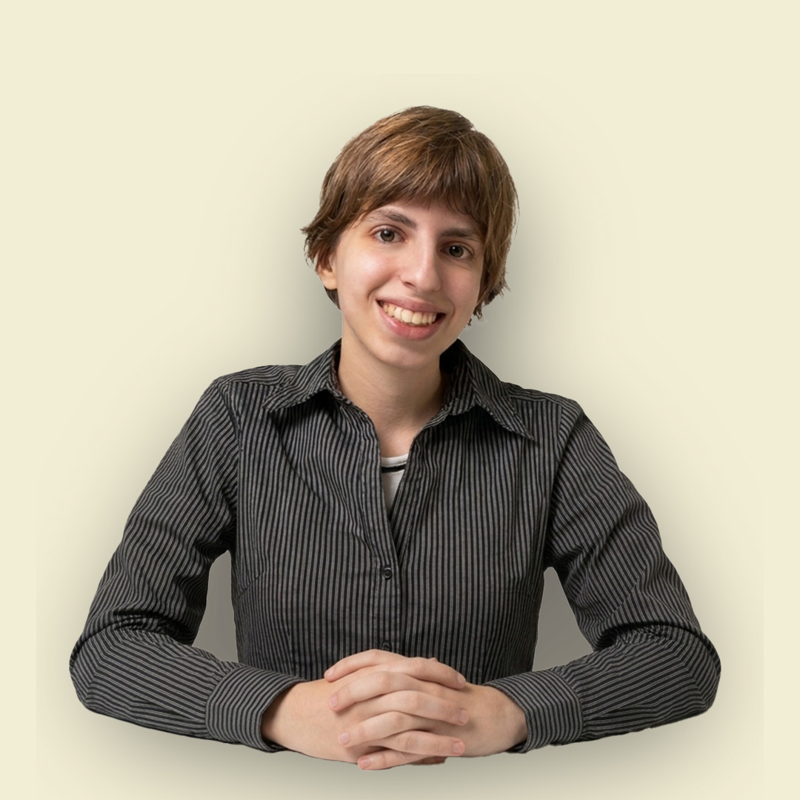

Sobre mim
Prazer, me chamo Duda Schemidt.
Este é o meu espaço criativo, onde demonstro alguns dos meus proejtos desenvolvidos e também alguns experimentos.
Aqui compartilho meus trabalhos, minhas referências e meu processo criativo.
Meus projetos
Abra a latinha para descobrir o que está aqui dentro.
Passe o mouse ou clique na latinha para descobrir os projetos.
Vamos conversar?
Entre em contato.
Tem um projeto em mente, uma ideia para desenvolver ou interesse em colaborar? Entre em contato pelos canais abaixo.
Disponível para conversas, projetos criativos e novas colaborações.